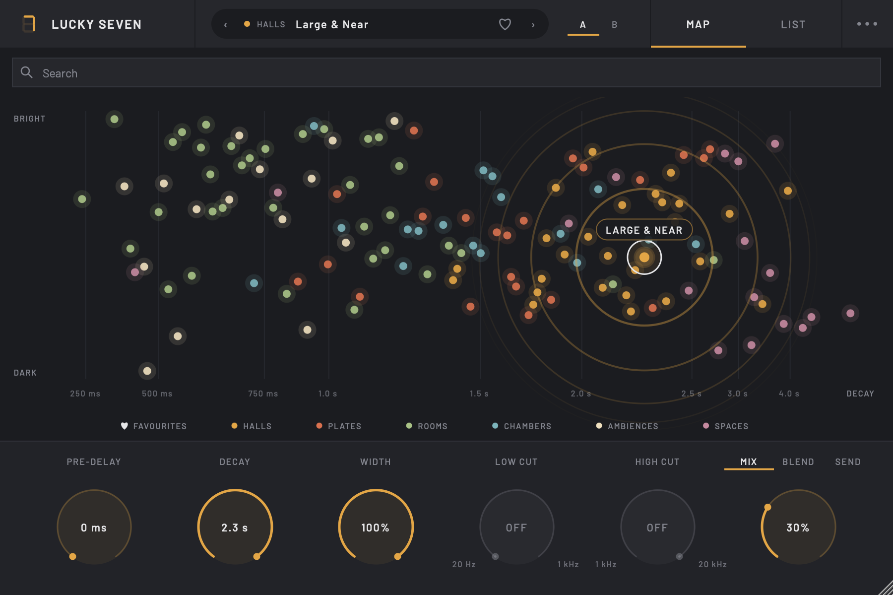
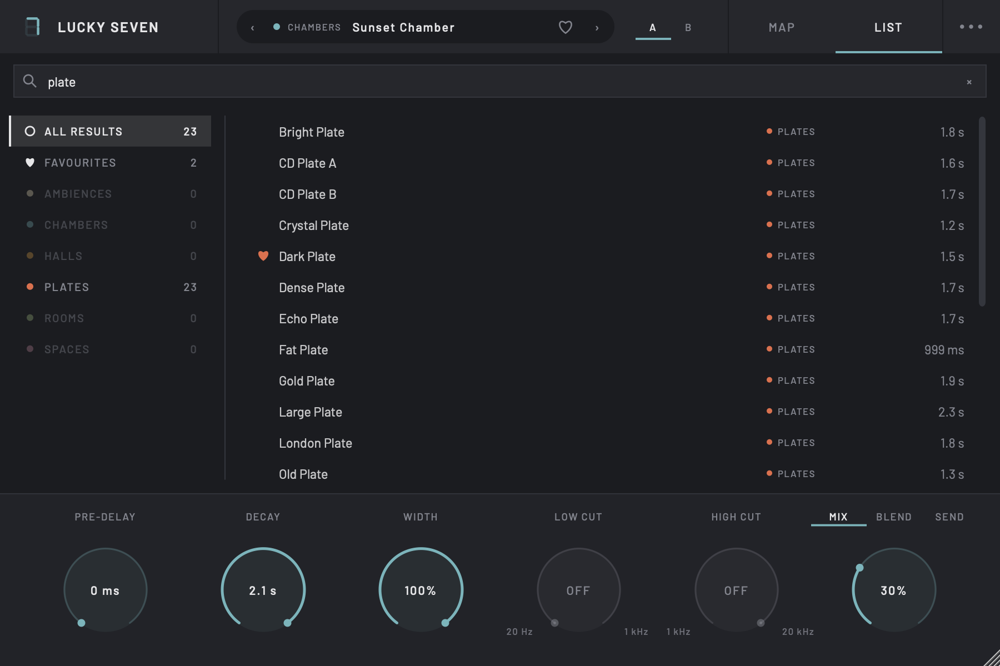
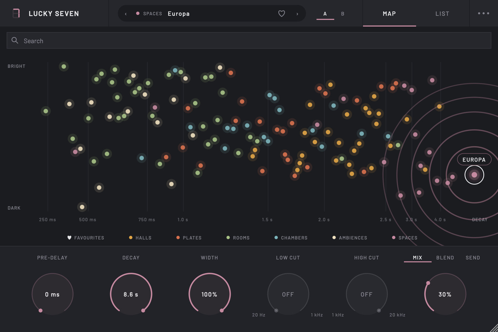
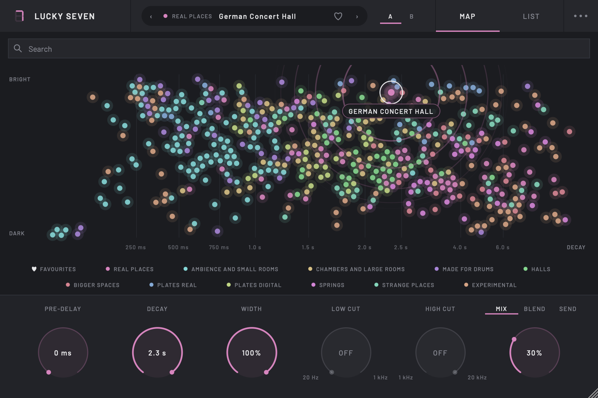

Find the right reverb in seconds.
Pick a sound from the map, shape the tail, blend it in. Lucky Seven comes with 134 world-class reverbs captured from the Bricasti M7, and works with any impulse-response library you already own.
Free and open source · Apple Silicon & Intel · macOS 13 or newer

Everything you need, nothing you don't.
Every reverb on a map
Each impulse response is placed by how long its tail lasts and how bright it sounds, so you find the right sound by ear instead of by name. Search and category filters narrow it down, and there's a list view and favourites too.
Bring your own IRs
Add as many folders of WAV, AIFF or FLAC impulse responses as you like: your own captures, free packs, whole libraries. Each subfolder becomes a category on the map, left/right file pairs play in true stereo, and every control works on them.
A decay knob that keeps the character
Shorten any IR without losing what makes it special. Highs still die away faster than lows, so a shortened hall still sounds like that hall, just tighter.
Mix, Blend or Send
Mix for a classic wet/dry knob. Blend keeps your dry signal at 0 dB and lets you dial reverb in by the decibel. Send goes 100% wet for return tracks.
Shape the tone
Low and high cut knobs take the mud or the fizz out of the reverb, and Width narrows it all the way to mono so it sits behind its source. Pre-delay up to 250 ms, true-stereo processing throughout.
Comes with the Bricasti M7
134 world-class reverbs at your fingertips: halls, plates, rooms, chambers, ambiences and spaces from the most sought-after reverb unit there is.


Use it with Ableton's Convolution Reverb pack.
If you have Ableton's Convolution Reverb pack, its 480-odd impulse responses (real places, halls, plates, springs, drum rooms and some genuinely strange spaces) load straight into Lucky Seven.
In Lucky Seven, open the ··· menu, choose IR folders → Add a folder… and pick:
~/Music/Ableton/Factory Packs/Convolution Reverb/IRs
Press Cmd + Shift + G in the folder dialog and paste that path to jump straight there. Lucky Seven tidies the pack's numbered folders into categories and plays its left/right file pairs in true stereo.

Up and running in a couple of minutes.
-
Download the installer
Download Lucky-Seven.pkg and double-click it.
-
Give the installer permission to run
macOS blocks the installer the first time with “Lucky-Seven.pkg” Not Opened, because free apps like Lucky Seven aren't signed with a paid Apple certificate. To allow it:
- Click Done (not Move to Trash).
- Open System Settings → Privacy & Security and scroll down to Security.
- Click Open Anyway, enter your password, then click Open.
You only need to do this once.
-
Run the installer
Click through to the end. It installs both the VST3 and Audio Unit versions for every user on your Mac.
-
Open it in your DAW
Add Lucky Seven to a track (rescan plug-ins first if it doesn't appear).
Prefer to install by hand?
Download the zip from the releases page and copy Lucky Seven.vst3 into ~/Library/Audio/Plug-Ins/VST3 and Lucky Seven.component into ~/Library/Audio/Plug-Ins/Components. Those folders may be empty; that's normal. Then unblock the plug-ins in Terminal:
xattr -dr com.apple.quarantine ~/Library/Audio/Plug-Ins/VST3/"Lucky Seven.vst3" xattr -dr com.apple.quarantine ~/Library/Audio/Plug-Ins/Components/"Lucky Seven.component"
For the impulse responses, either click Download Bricasti IRs in the plugin, or download Samplicity - Bricasti IRs version 2023-10.zip yourself and move the unzipped folder into ~/Music/Lucky Seven/IRs.
Notes
Light on CPU
The long tail runs on a background thread, so each instance uses about 1% of a core with no spikes, even at a 64-sample buffer with 30-second IRs. Instances go idle when their input is silent.
Formats
VST3 and Audio Unit, built for Apple Silicon and Intel Macs running macOS 13 or newer. Impulse responses can be mono, stereo, true-stereo (4-channel) or left/right file pairs, up to 30 seconds long. Manage your folders from the ··· menu under IR folders.
Open source
The code is on GitHub under the AGPLv3. Bug reports and ideas are welcome as issues.
About the IRs
The Bricasti M7 sounds are Samplicity's free captures, fetched straight from Samplicity the first time you open Lucky Seven. Thanks to Samplicity for sharing them.